library(sf)
library(spThin)
library(janitor)
library(here)
library(rasterVis)
library(tidyverse)
library(ENMeval)
library(patchwork)
library(terra)
library(usdm)Species Distribution Modeling
I am modeling the distributions of the four Enyalius study species (E. catenatus, E. pictus, E. perditus, and E. iheringii) to understand their current distributions and responses to long-term historical climate change.
I will build robust models of their current distributions using recent environmental data (i.e. last few decades). Then, I will build similar models with variables that are available for both present-day and historical (i.e. last glacial maximum) time periods. I will use the current models as benchmarks for the performance of the models intended for hindcasting.
Current
Variable selection
I’m choosing variables that encompass the range of the Enyalius species, are relevant to their physiology, and are obtainable at a reasonable spatial resolution.
Bioclims:
Using the BrazilClim dataset downloaded from Ramoni-Perazzi, P., Passamani, M., Thielen, D., Padovani, C., Arizapana-Almonacid, M.A., 2021. BrazilClim : The overcoming of limitations of pre‐existing bioclimate data. Int. J. Climatol. https://doi.org/10.1002/joc.7325. Downloaded on 2022-02-25.
1 km resolution.
For projecting to past climates, I’m using CHELSA TraCE21k v1.0 Bioclims at 100-year intervals back to the LGM. 1 km resolution. Not downloaded yet- need to fill this in when it happens
Land Cover:
Using biome projections from Costa et al. 2018 at 1000-year intervals back to the LGM. 5 km resolution that I’m downscaling with nearest-neighbor resampling. Downloaded on 2023-06-08.
Variable processing
I’m cropping the variables to a relevant extent before going further with the individual SDMs. I’m cropping them with a 1 degree buffer around the entire species group’s range.
First, I’m reading in the localities and plotting them to make sure there isn’t anything wild. Everything looks reasonable!
# read in as a data frame first
locs_df <- read_csv(here("analysis", "data", "enyalius_locs.csv")) %>%
# the variable names are messy
janitor::clean_names() %>%
filter(!is.na(latitude), !is.na(longitude)) %>%
# there are some lat/longs with spaces. Need to fix this
mutate(longitude = str_remove(longitude, "\\s"),
latitude = str_remove(latitude, "\\s")) %>%
# convert to numeric
mutate(longitude = as.numeric(longitude),
latitude = as.numeric(latitude))
# convert to sf for spatial operations
locs_sf <- st_as_sf(locs_df,
coords = c("longitude", "latitude"),
crs = 4326)
# convert to vect for interacting with terra
locs_vec <- vect(locs_sf)
# atlantic forest shapefile for plotting
af <- read_sf(here("analysis", "data", "atlantic_forest", "atlantic_forest.geojson"))
# plot
ggplot() +
geom_sf(data = st_geometry(af), fill = "gray") +
geom_sf(data = locs_sf, aes(fill = species), shape = 21) +
scale_fill_viridis_d() +
theme_minimal()Creating a convex hull with an 2 degree buffer.
mcp_all <- st_convex_hull(st_union(locs_sf)) %>%
st_buffer(dist = units::set_units(2, degree)) %>%
terra::vect()
plot(st_geometry(af))
plot(mcp_all, add=TRUE)
plot(locs_vec, add=TRUE)Read in bioclims. Originally I waited to crop, but I folded that into the initial variable downloads. The rasters going into cropped_predictors are the same as I’m reading in, just with different names. They’re also being written as a single file, rather than multiple files.
bioclims <- terra::rast(list.files(here("analysis", "data", "current_climate_chelsa"), full.names = TRUE))
# get the only the bioclim labels
names(bioclims) <- str_extract(names(bioclims), "bio[\\d+]*")
plot(bioclims$bio1)
plot(st_geometry(af), add=TRUE)
plot(mcp_all, add=TRUE)
plot(locs_vec, add=TRUE)Crop the present-day biome layer and convert it to a binary variable, where 1 is the presence of tropical moist forest and 0 is the absence of tropical moist forest.
forest_cover <- terra::rast(here("analysis", "data", "biomes", "S1biomes_0k.asc")) %>%
aggregate(2) %>%
terra::crop(mcp_all) %>%
terra::mask(mcp_all)
forest_cover[forest_cover != 1] <- 0
names(forest_cover) <- "forest_cover"
plot(forest_cover)
plot(st_geometry(af), add=TRUE)
plot(mcp_all, add=TRUE)
plot(locs_vec, add=TRUE)Write the cropped climate and forest cover layers to file for use in the SDMs.
terra::writeRaster(bioclims, here("analysis", "output", "cropped_predictors", "bioclims.tif"))
terra::writeRaster(forest_cover, here("analysis", "output", "cropped_predictors", "forest_cover.tif"))General SDM steps
For each SDM, I’m going to perform the following steps:
- spatially thin localities
- crop the new predictors according to a minimum convex hull of the localities for each species with a 0.5 degree buffer
- I tried point-buffers, but they resulted in worse models
- extract background environmental data (10,000 points) for predictor correlation and modeling
- correlate predictors
- remove predictors w/ r > 0.75, prioritizing ecologically relevant variables
- Use Maxent for modeling
- LQH feature classes to keep models relatively simple
- regularization multipliers from 0.5 to 5.0 in 0.5 increments to test a wide range of regularization
- leave-one-out cross validation for model selection due to a low number of localities
- select models first by AICc (model fit), followed by ommission error rate (prediction) In addition, I’m reading/writing data for each species in isolation, so the code for one species isn’t dependent on that for another, or for what I did during variable processing.
E. catenatus
Note: putative “catenatus 2” species from Mariana’s phylogenetic work have been removed.
Reading in data for plotting.
# atlantic forest shapefile
af <- read_sf(here("analysis", "data", "atlantic_forest", "atlantic_forest.geojson"))Spatial thin
Read and filter localities.
locs_cat <- read_csv(here("analysis", "data", "enyalius_locs.csv")) %>%
# the variable names are messy
janitor::clean_names() %>%
filter(species == "catenatus",
!is.na(latitude), !is.na(longitude),
# remove duplicates
!duplicated(latitude)) %>%
# there are some lat/longs with spaces. Need to fix this
mutate(longitude = str_remove(longitude, "\\s"),
latitude = str_remove(latitude, "\\s")) %>%
# convert to numeric
mutate(longitude = as.numeric(longitude),
latitude = as.numeric(latitude)) %>%
# one locality falls into the ocean when using the aggregated data. Have to scooch it over by 0.05 degrees to overlap with the correct cell
mutate(longitude = if_else(longitude == -39.06, longitude - 0.05, longitude)) %>%
# convert to sf for spatial operations
st_as_sf(coords = c("longitude", "latitude"),
crs = 4326,
remove = FALSE)
# plot localities
plot(st_geometry(af))
plot(st_geometry(locs_cat), add = TRUE)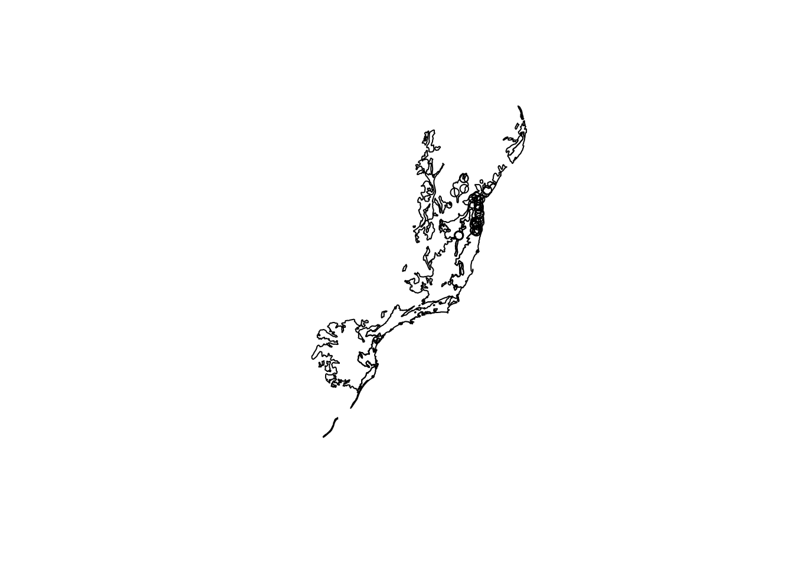
Spatial thin. I’m using a 20 km buffer to reduce the impact of spatial autocorrelation.
set.seed(394833)
#run spthin algorithm. This returns 100 possible combinations of removed localities
output <-
spThin::thin(
locs_cat,
'latitude',
'longitude',
'species',
thin.par = 20,
reps = 100,
locs.thinned.list.return = TRUE,
write.files = FALSE,
verbose = FALSE
)
# I want to maximize the # of localities returned
maxThin <- which(sapply(output, nrow) == max(sapply(output, nrow)))
# if there are multiple iterations with the max # of localities, pick one
maxThin <-
output[[ifelse(length(maxThin) > 1, maxThin[1], maxThin)]]
# subset locs to match only thinned locs
locs_cat <- locs_cat[as.numeric(rownames(maxThin)), ]
# get the unused locs as a testing data set
# this probably isn't useful since they will overlap heavily with the training data, but seems like another piece of info to look at
test_cat <- locs_cat[-as.numeric(rownames(maxThin)), ]
plot(st_geometry(af))
plot(st_geometry(locs_cat), add=TRUE)Write thinned localities to file
# Write to file
st_write(locs_cat, here("analysis", "output", "thinned_localities", "catenatus_thinned.gpkg"))Crop environment
First, I need to read in the environmental data.
bioclims <- terra::rast(here("analysis", "output", "cropped_predictors", "bioclims.tif"))
forest_cover <- terra::rast(here("analysis", "output", "cropped_predictors", "forest_cover.tif"))Cropping and combining variables for analysis.
# for projection
mcp_cat <- st_convex_hull(st_union(locs_cat)) %>%
st_buffer(dist = units::set_units(0.5, degree)) %>%
terra::vect()
bioclims_cat <- bioclims %>%
# the bioclims are in a slightly different CRS
terra::project(forest_cover) %>%
terra::crop(mcp_cat) %>%
terra::mask(mcp_cat)
forest_cover_cat <- forest_cover %>%
terra::crop(bioclims_cat) %>%
terra::mask(bioclims_cat[[1]])
predictors_cat <- c(bioclims_cat)
plot(bioclims_cat[[1]])
plot(forest_cover_cat)
plot(locs_cat, add=TRUE)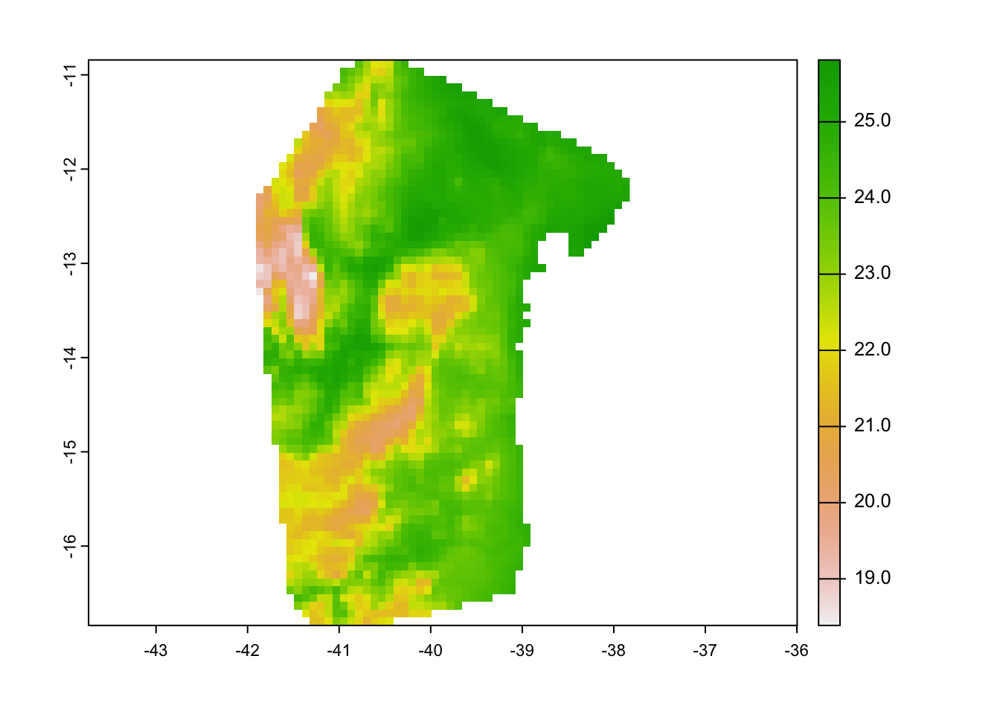
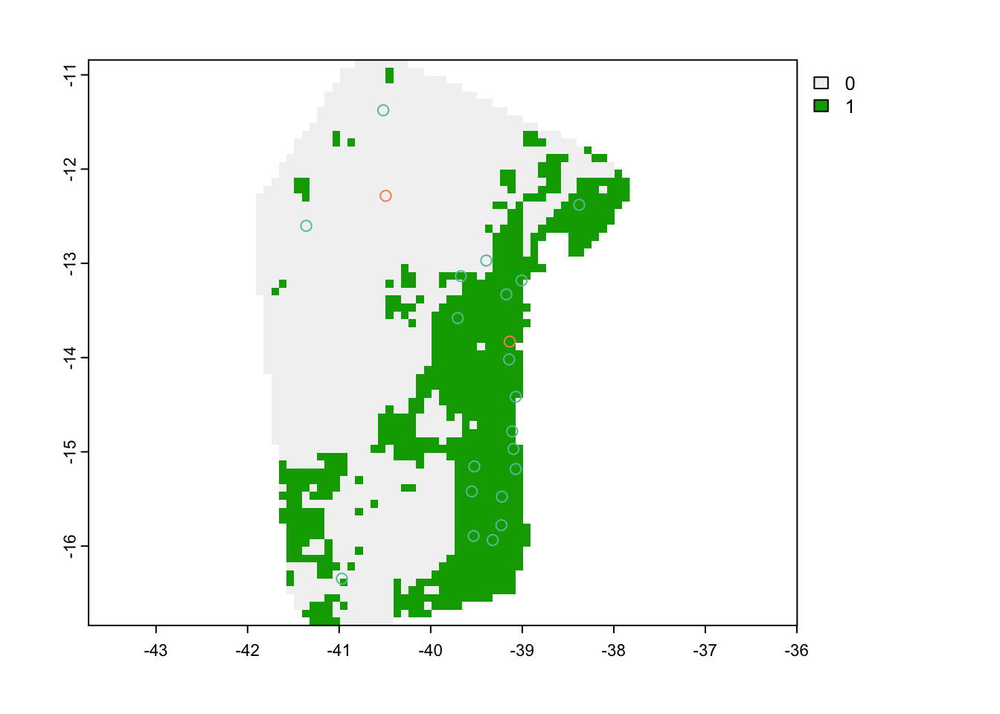
Predictor correlation
Sample 10000 background points. Only returned 2355 points.
set.seed(1988888)
# for variable correlations
bg_envt_cat <- terra::spatSample(predictors_cat, 10000,
warn=TRUE,
na.rm = TRUE,
as.df = TRUE,
xy = TRUE)
# for use in ENMevaluate
bg_coords_cat <- bg_envt_cat[,c("x", "y")]Next, I’ll extract the values for the background points and perform variance inflation factor stepwise selection with a VIF threshold of 10.
# extract values
bg_corr_cat <- bg_envt_cat %>% select(-x, -y)
usdm::vifstep(bg_corr_cat, th=10)13 variables from the 19 input variables have collinearity problem:
bio6 bio11 bio10 bio2 bio12 bio5 bio17 bio19 bio1 bio16 bio14 bio7 bio9
After excluding the collinear variables, the linear correlation coefficients ranges between:
min correlation ( bio4 ~ bio3 ): 0.00359246
max correlation ( bio18 ~ bio13 ): 0.6946972
---------- VIFs of the remained variables --------
Variables VIF
1 bio13 4.386788
2 bio15 2.593857
3 bio18 2.335780
4 bio3 4.981678
5 bio4 1.094628
6 bio8 1.470134The final variable list: BIO3, BIO4, BIO8, BIO13, BIO15, BIO18
# label: pred-cat
predictors_cat <- predictors_cat[[c("bio3", "bio4", "bio8", "bio13", "bio15", "bio18")]]Maxent model
I’m using a jackknifing model evaluation approach since I only have 26 observations and a previous attempt for spatial CV led to wonky evaluation metrics. Additionally, spatial CV can lead to worse predictions than non-spatial CV: Wadoux et al. 2021.
set.seed(7990777)
coords_cat <- st_coordinates(locs_cat)
colnames(coords_cat) <- c("x", "y")
folds_cat <- ENMeval::get.jackknife(occ = coords_cat,
bg = bg_coords_cat)Run the model. Predictions are clamped to prevent extrapolation.
set.seed(34622)
# the vector of regularization multipliers to test
rms <- seq(0.5, 5, 0.5)
# convert the terra object to a raster stack for use in EMNeval
predictors_cat_stack <- raster::stack(predictors_cat)
# iterate model building over all chosen parameter settings
sdm_cat <-
ENMeval::ENMevaluate(
occs = coords_cat,
envs = predictors_cat_stack,
bg.coords = bg_coords_cat,
RMvalues = rms,
fc = c('L', 'LQ'),
# clamping to prevent model extrapolation
doClamp = TRUE,
taxon.name = "catenatus",
partitions = "user",
user.grp = folds_cat,
bg.grp,
#categoricals = "forest_cover",
clamp = TRUE,
algorithm = "maxent.jar",
parallel = TRUE,
numCores = 6
)# write the model to file
write_rds(sdm_cat, here("analysis", "output", "sdm_models", "sdm_catenatus.rds"))Model evaluation
Let’s take a look at the model results.
eval_table_cat <- sdm_cat@results
eval_mods_cat <- sdm_cat@models
names(eval_mods_cat) <-
str_replace_all(names(eval_mods_cat), "\\.", "\\_")Select the final model. First I’m looking at plots of model evaluation stats to get an idea of the spread of stats.
daic_cat <- ggplot(data = eval_table_cat, aes(x = rm, y = delta.AICc, color = fc)) +
geom_point() +
scale_color_viridis_d() +
theme_bw()
or_cat <- ggplot(data = eval_table_cat, aes(x = rm, y = or.10p.avg, color = fc)) +
geom_point() +
scale_color_viridis_d() +
theme_bw()
dauc_cat <- ggplot(data = eval_table_cat, aes(x = rm, y = auc.diff.avg, color = fc)) +
geom_point() +
scale_color_viridis_d() +
theme_bw()
(daic_cat + or_cat) / (dauc_cat)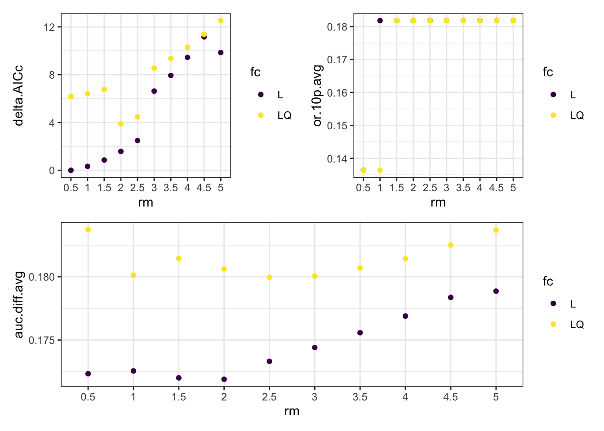
Now I’m going to take a look at tables of delta AICc, omission rate, and AUC to see how close the models are. The model with the lowest AICc has a regularization multiplier of 1 and L feature class.
eval_table_cat %>%
select(delta.AICc, AICc, or.10p.avg, or.mtp.avg, auc.diff.avg, auc.val.avg, rm, fc) %>%
arrange(delta.AICc) %>%
head(10) %>%
knitr::kable()| delta.AICc | AICc | or.10p.avg | or.mtp.avg | auc.diff.avg | auc.val.avg | rm | fc |
|---|---|---|---|---|---|---|---|
| 0.0000000 | 308.7252 | 0.1363636 | 0.0454545 | 0.1723385 | 0.8128161 | 0.5 | L |
| 0.3292020 | 309.0544 | 0.1818182 | 0.0454545 | 0.1725600 | 0.8119668 | 1 | L |
| 0.8594879 | 309.5847 | 0.1818182 | 0.0454545 | 0.1720104 | 0.8117738 | 1.5 | L |
| 1.5825323 | 310.3078 | 0.1818182 | 0.0454545 | 0.1719001 | 0.8108280 | 2 | L |
| 2.4938608 | 311.2191 | 0.1818182 | 0.0909091 | 0.1733183 | 0.8090137 | 2.5 | L |
| 3.8876490 | 312.6129 | 0.1818182 | 0.0909091 | 0.1806197 | 0.8027215 | 2 | LQ |
| 4.4632404 | 313.1885 | 0.1818182 | 0.0909091 | 0.1799597 | 0.8027215 | 2.5 | LQ |
| 6.1840491 | 314.9093 | 0.1363636 | 0.0909091 | 0.1837364 | 0.8018722 | 0.5 | LQ |
| 6.4005467 | 315.1258 | 0.1363636 | 0.0454545 | 0.1801325 | 0.8046709 | 1 | LQ |
| 6.6230754 | 315.3483 | 0.1818182 | 0.0909091 | 0.1744074 | 0.8073152 | 3 | L |
Select model.
mod_cat <- eval_mods_cat$rm_0_5_fc_L
opt_seq_tune_cat <- "rm.0.5_fc.L"Plot the variable contributions and response curves. The most important variables are bio15, bio18, and bio13. All precipitation!
plot(mod_cat)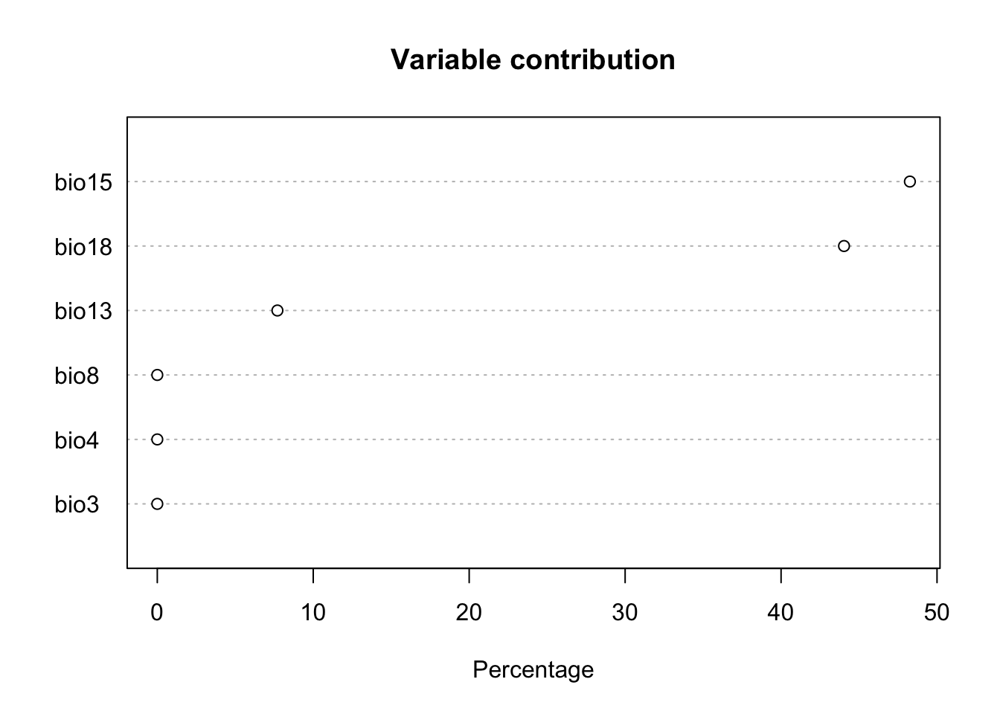
png("variable_contribution_catenatus.png")
plot(mod_cat)
dev.off()
file.copy(here("variable_contribution_catenatus.png"), here("analysis", "output", "sdm_response_curves_variable_importance", "variable_contribution_catenatus.png"))
file.remove(here("variable_contribution_catenatus.png"))Suitability increases with precipitation amount of the wettest month, decreases with precipitation seasonality, and increases with mean monthly precipitation of the warmest quarter.
dismo::response(mod_cat)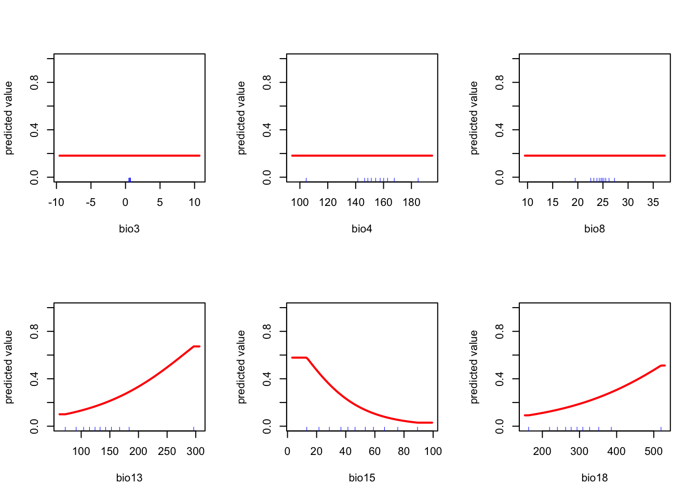
png("response_curves_catenatus.png")
dismo::response(mod_cat)
dev.off()
file.copy(here("response_curves_catenatus.png"), here("analysis", "output", "sdm_response_curves_variable_importance", "response_curves_catenatus.png"))
file.remove(here("response_curves_catenatus.png"))Project
I’m projecting the model to the study area extent.
pred_cat <- ENMeval::eval.predictions(sdm_cat)[[opt_seq_tune_cat]]
plot(pred_cat)
plot(st_geometry(af), add = TRUE)
plot(st_geometry(locs_cat), pch = 21, bg = alpha("lightgray", 0.5), add = TRUE)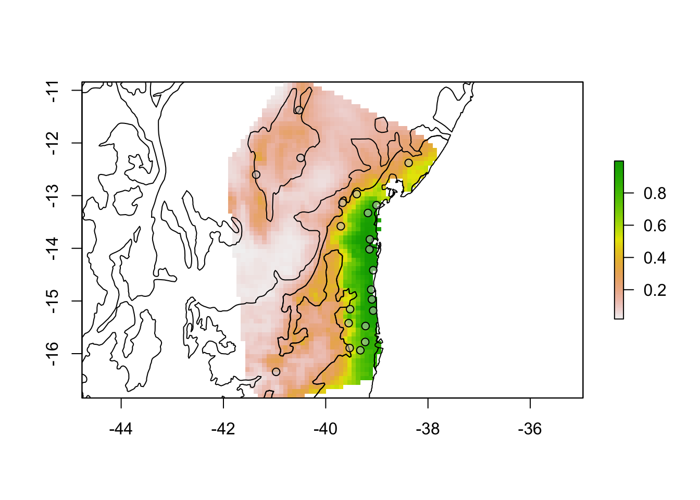
pred_cat_thresh <- pred_cat$rm.0.5_fc.L
# observed suitabilities
obs_suit_cat <- terra::extract(pred_cat$rm.0.5_fc.L, locs_cat)
# minimum training presence
min_suit_cat <- min(obs_suit_cat)
pred_cat_thresh[pred_cat_thresh >= min_suit_cat] <- 1
pred_cat_thresh[pred_cat_thresh < min_suit_cat] <- 0
plot(pred_cat_thresh)
plot(st_geometry(af), add = TRUE)
plot(st_geometry(locs_cat), pch = 21, bg = alpha("lightgray", 0.5), add = TRUE)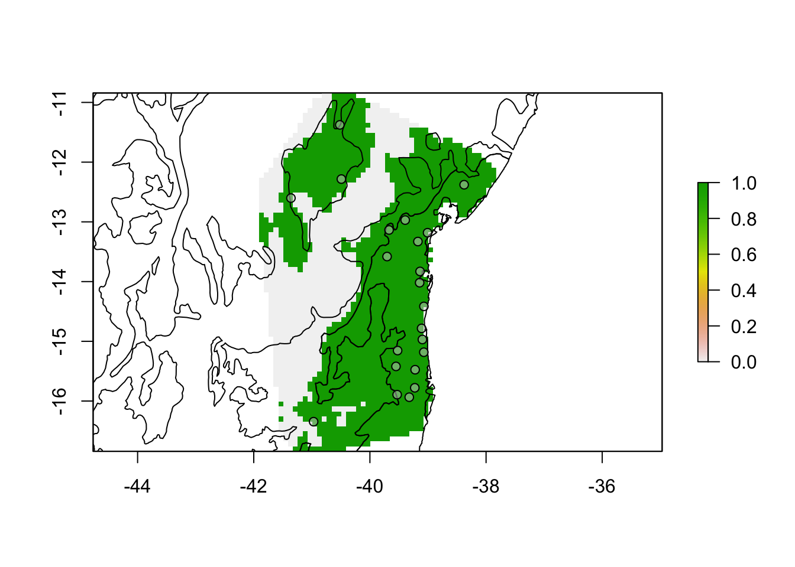
E. pictus
Reading in data for plotting.
# atlantic forest shapefile
af <- read_sf(here("analysis", "data", "atlantic_forest", "atlantic_forest.geojson"))Spatial thin
Read and filter localities. I’m including the original genetic localities from Mariana and iNaturalist observations I downloaded on 2023-07-10. Citation: GBIF.org (10 July 2023) GBIF Occurrence Download https://doi.org/10.15468/dl.uj2ft2.
locs_pic <- read_csv(here("analysis", "data", "enyalius_locs.csv")) %>%
# the variable names are messy
janitor::clean_names() %>%
filter(species == "pictus",
!is.na(latitude), !is.na(longitude),
# remove duplicates
!duplicated(latitude)) %>%
# there are some lat/longs with spaces. Need to fix this
mutate(longitude = str_remove(longitude, "\\s"),
latitude = str_remove(latitude, "\\s")) %>%
# convert to numeric
mutate(longitude = as.numeric(longitude),
latitude = as.numeric(latitude)) %>%
# convert to sf for spatial operations
st_as_sf(coords = c("longitude", "latitude"),
crs = 4326,
remove = FALSE)
# read and clean pictus gbif localities
locs_pic_gbif <- read_tsv(here("analysis", "data", "pictus_gbif.tsv")) %>%
dplyr::select(
genus,
species,
state = stateProvince,
longitude = decimalLongitude,
latitude = decimalLatitude,
id_code = gbifID
) %>%
mutate(
species = str_remove_all(species, "Enyalius "),
id_code = paste0("pic_", id_code)
) %>%
st_as_sf(
coords = c("longitude", "latitude"),
crs = 4326,
remove = FALSE
)
# combine the two datasets
locs_pic <- bind_rows(
locs_pic,
locs_pic_gbif
)
# plot localities
ggplot() +
geom_sf(data = st_geometry(af), fill = "darkgreen") +
geom_sf(data = locs_pic) 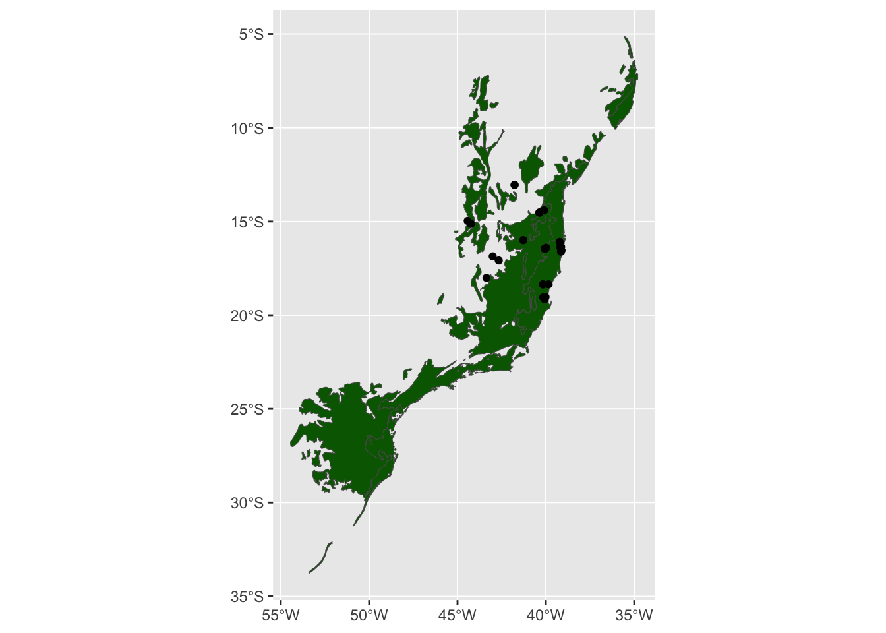
Spatial thin. I’m using a 20 km buffer. Results in 16 localities.
set.seed(888273)
#run spthin algorithm. This returns 100 possible combinations of removed localities
output <-
spThin::thin(
locs_pic,
'latitude',
'longitude',
'species',
thin.par = 20,
reps = 100,
locs.thinned.list.return = TRUE,
write.files = FALSE,
verbose = FALSE
)
# I want to maximize the # of localities returned
maxThin <- which(sapply(output, nrow) == max(sapply(output, nrow)))
# if there are multiple iterations with the max # of localities, pick one
maxThin <-
output[[ifelse(length(maxThin) > 1, maxThin[1], maxThin)]]
# subset locs to match only thinned locs
locs_pic <- locs_pic[as.numeric(rownames(maxThin)), ]
# get the unused locs as a testing data set
# this probably isn't useful since they will overlap heavily with the training data, but seems like another piece of info to look at
test_pic <- locs_pic[-as.numeric(rownames(maxThin)), ]
ggplot() +
geom_sf(data = st_geometry(af), fill = "darkgreen") +
geom_sf(data = locs_pic)Write thinned localities to file
# Write to file
st_write(locs_pic, here("analysis", "output", "thinned_localities", "pictus_thinned.gpkg"))Crop environment
First, I need to read in the environmental data.
bioclims <- terra::rast(here("analysis", "output", "cropped_predictors", "bioclims.tif"))
forest_cover <- terra::rast(here("analysis", "output", "cropped_predictors", "forest_cover.tif"))Cropping and combining variables for analysis.
mcp_pic <-
st_convex_hull(st_union(locs_pic)) %>%
st_buffer(dist = units::set_units(0.5, degree)) %>%
terra::vect()
bioclims_pic <- bioclims %>%
# the bioclims are in a slightly different CRS
terra::project(forest_cover) %>%
terra::crop(mcp_pic) %>%
terra::mask(mcp_pic)
forest_cover_pic <- forest_cover %>%
terra::crop(bioclims_pic) %>%
terra::mask(bioclims_pic[[1]])
predictors_pic <- c(bioclims_pic)
plot(bioclims_pic[[1]])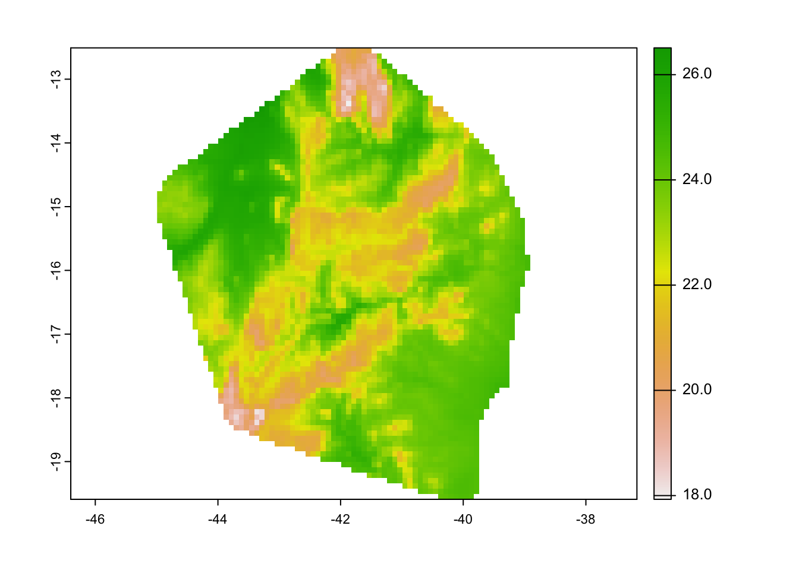
plot(forest_cover_pic)
plot(locs_pic, add = TRUE)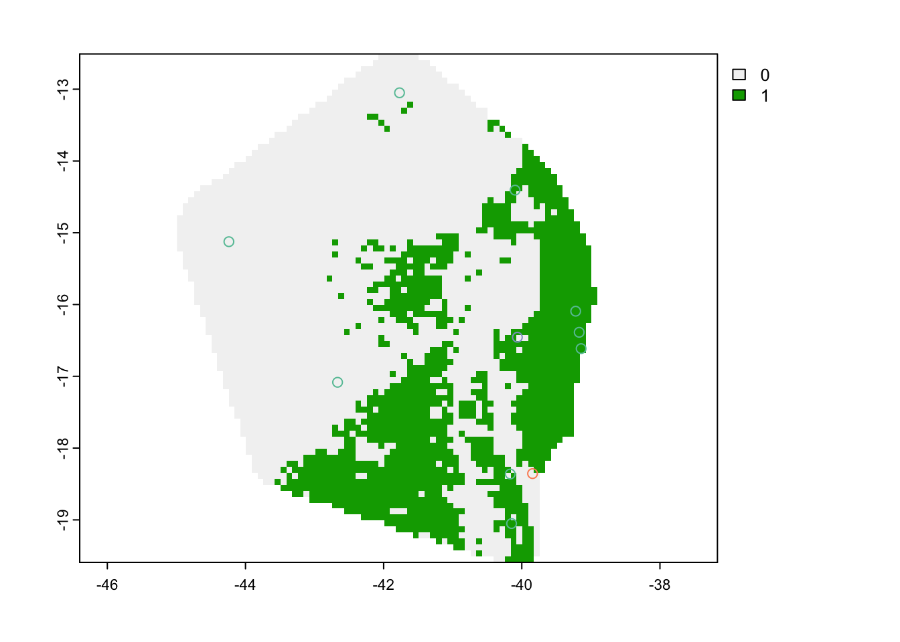
Predictor correlation
Sample 10000 background points. 4285 actually sampled.
set.seed(9745)
# for variable correlations
bg_envt_pic <- terra::spatSample(predictors_pic, 10000,
warn=TRUE,
na.rm = TRUE,
as.df = TRUE,
xy = TRUE)
# for use in ENMevaluate
bg_coords_pic <- bg_envt_pic[,c("x", "y")]Next, I’ll extract the values for the background points and perform variance inflation factor stepwise selection with a VIF threshold of 10.
# extract values
bg_corr_pic <- bg_envt_pic %>% select(-x, -y)
usdm::vifstep(bg_corr_pic, th=10)13 variables from the 19 input variables have collinearity problem:
bio6 bio11 bio1 bio2 bio17 bio10 bio14 bio16 bio8 bio12 bio5 bio15 bio3
After excluding the collinear variables, the linear correlation coefficients ranges between:
min correlation ( bio9 ~ bio7 ): -0.0418892
max correlation ( bio7 ~ bio19 ): -0.8432303
---------- VIFs of the remained variables --------
Variables VIF
1 bio13 3.180552
2 bio18 5.561697
3 bio19 5.347767
4 bio4 2.271783
5 bio7 4.290330
6 bio9 2.505081The final variable list: BIO4, BIO7, BIO9, BIO13, BIO18, BIO19
predictors_pic <- predictors_pic[[c("bio4", "bio7", "bio9", "bio13", "bio18", "bio19")]]Maxent model
I’m using a jackknifing model evaluation approach since I only have 15 observations.
set.seed(755555598)
coords_pic <- st_coordinates(locs_pic)
colnames(coords_pic) <- c("x", "y")
folds_pic <- ENMeval::get.jackknife(occ = coords_pic,
bg = bg_coords_pic)Run the model. Predictions are clamped to prevent extrapolation. This part takes a little bit. 29 minutes 57 sec on the wall clock on a 2020 M1 MacBook air with 6 cores and 16 GB of memory. Probably because of the high number of background points and the wide range of regularization multipliers I’m exploring.
set.seed(3767557)
# the vector of regularization multipliers to test
rms <- seq(0.5, 5, 0.5)
# convert the terra object to a raster stack for use in EMNeval
predictors_pic_stack <- raster::stack(predictors_pic)
# iterate model building over all chosen parameter settings
sdm_pic <-
ENMeval::ENMevaluate(
occs = coords_pic,
envs = predictors_pic_stack,
bg.coords = bg_coords_pic,
RMvalues = rms,
fc = c('L', 'LQ'),
# clamping to prevent model extrapolation
doClamp = TRUE,
taxon.name = "pictus",
partitions = "user",
user.grp = folds_pic,
bg.grp,
clamp = TRUE,
algorithm = "maxent.jar",
parallel = TRUE,
numCores = 6
)# write the model to file
write_rds(sdm_pic, here("analysis", "output", "sdm_models", "sdm_pictus.rds"))Model evaluation
Let’s take a look at the model results.
eval_table_pic <- sdm_pic@results
eval_mods_pic <- sdm_pic@models
names(eval_mods_pic) <-
str_replace_all(names(eval_mods_pic), "\\.", "\\_")Select the final model. First I’m looking at plots of model evaluation stats to get an idea of the spread of stats.
daic_pic <- ggplot(data = eval_table_pic, aes(x = rm, y = delta.AICc, color = fc)) +
geom_point() +
scale_color_viridis_d() +
theme_bw()
or_pic <- ggplot(data = eval_table_pic, aes(x = rm, y = or.10p.avg, color = fc)) +
geom_point() +
scale_color_viridis_d() +
theme_bw()
dauc_pic <- ggplot(data = eval_table_pic, aes(x = rm, y = auc.diff.avg, color = fc)) +
geom_point() +
scale_color_viridis_d() +
theme_bw()
(daic_pic + or_pic) / (dauc_pic)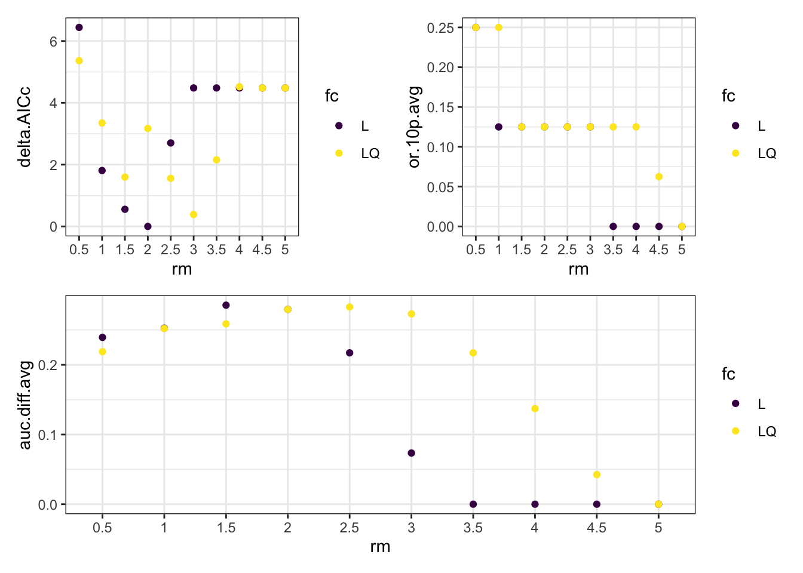
Now I’m going to take a look at tables of delta AICc, omission rate, and AUC to see how close the models are. The model with the lowest AICc has a regularization multiplier of 1 and L feature class. It also has a reasonable omission rate and AUC. I will go forward with this model.
eval_table_pic %>%
select(delta.AICc, AICc, or.10p.avg, or.mtp.avg, auc.diff.avg, auc.val.avg, rm, fc) %>%
arrange(delta.AICc) %>%
head(10) %>%
knitr::kable()| delta.AICc | AICc | or.10p.avg | or.mtp.avg | auc.diff.avg | auc.val.avg | rm | fc |
|---|---|---|---|---|---|---|---|
| 0.0000000 | 263.1299 | 0.125 | 0.0625 | 0.2796101 | 0.6794632 | 2 | L |
| 0.3861555 | 263.5160 | 0.125 | 0.0625 | 0.2730406 | 0.6863186 | 3 | LQ |
| 0.5552342 | 263.6851 | 0.125 | 0.1250 | 0.2855795 | 0.6654026 | 1.5 | L |
| 1.5570898 | 264.6870 | 0.125 | 0.0625 | 0.2828967 | 0.6761960 | 2.5 | LQ |
| 1.5966498 | 264.7265 | 0.125 | 0.1250 | 0.2588020 | 0.6709452 | 1.5 | LQ |
| 1.8085447 | 264.9384 | 0.125 | 0.1250 | 0.2526877 | 0.6614790 | 1 | L |
| 2.1560991 | 265.2860 | 0.125 | 0.0625 | 0.2171840 | 0.5985123 | 3.5 | LQ |
| 2.7018374 | 265.8317 | 0.125 | 0.0625 | 0.2171840 | 0.5985123 | 2.5 | L |
| 3.1709962 | 266.3009 | 0.125 | 0.0625 | 0.2795410 | 0.6686989 | 2 | LQ |
| 3.3475819 | 266.4774 | 0.250 | 0.1250 | 0.2521567 | 0.6532526 | 1 | LQ |
Select model.
mod_pic <- eval_mods_pic$rm_2_fc_L
opt_seq_tune_pic <- eval_table_pic$tune.args[na.omit(eval_table_pic$delta.AICc) == 0][1]Variable importance. bio7 is the only important variable
plot(mod_pic)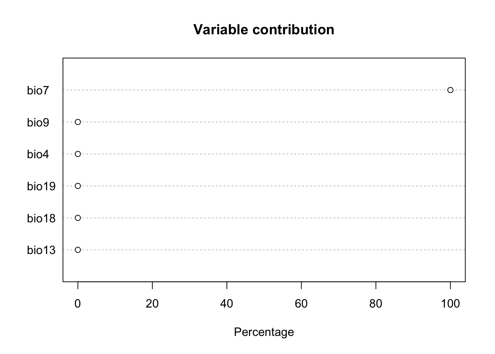
png("variable_contribution_pictus.png")
plot(mod_pic)
dev.off()
file.copy(here("variable_contribution_pictus.png"), here("analysis", "output", "sdm_response_curves_variable_importance", "variable_contribution_pictus.png"))
file.remove(here("variable_contribution_pictus.png"))Plot the response curves. Annual range in air temperature is negatively related with presence.
dismo::response(mod_pic)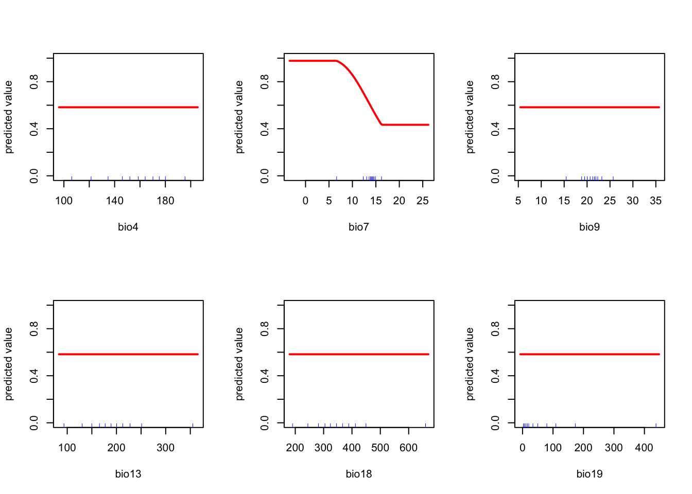
png("response_curves_pictus.png")
dismo::response(mod_pic)
dev.off()
file.copy(here("response_curves_pictus.png"), here("analysis", "output", "sdm_response_curves_variable_importance", "response_curves_pictus.png"))
file.remove(here("response_curves_pictus.png"))Project
I’m projecting the model to the study area extent.
pred_pic <- ENMeval::eval.predictions(sdm_pic)[[opt_seq_tune_pic]]
plot(pred_pic)
plot(st_geometry(af), add = TRUE)
plot(st_geometry(locs_pic), pch = 21, bg = alpha("lightgray", 0.5), add = TRUE)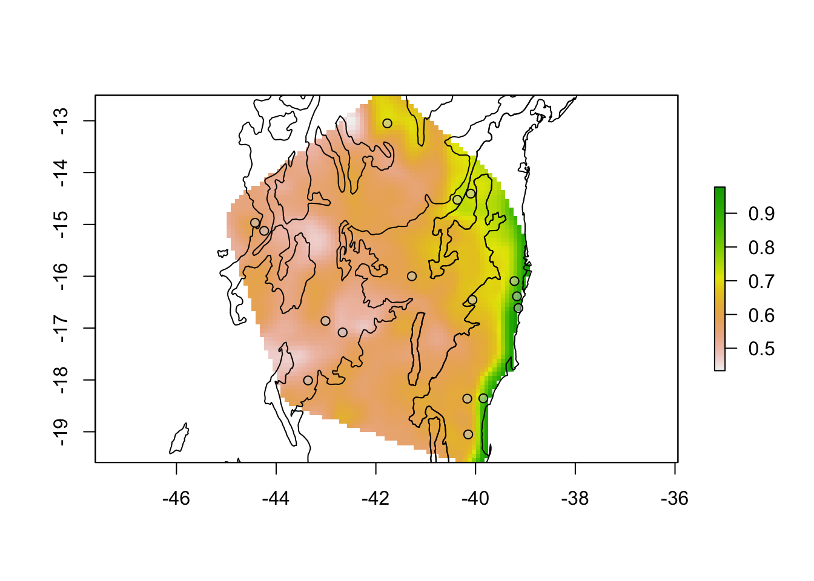
pred_pic_thresh <- pred_pic$rm.2_fc.L
# observed suitabilities
obs_suit_pic <- terra::extract(pred_pic$rm.2_fc.L, locs_pic)
# minimum training presence
min_suit_pic <- min(obs_suit_pic)
pred_pic_thresh[pred_pic_thresh >= min_suit_pic] <- 1
pred_pic_thresh[pred_pic_thresh < min_suit_pic] <- 0
plot(pred_pic_thresh)
plot(st_geometry(af), add = TRUE)
plot(st_geometry(locs_pic), pch = 21, bg = alpha("lightgray", 0.5), add = TRUE)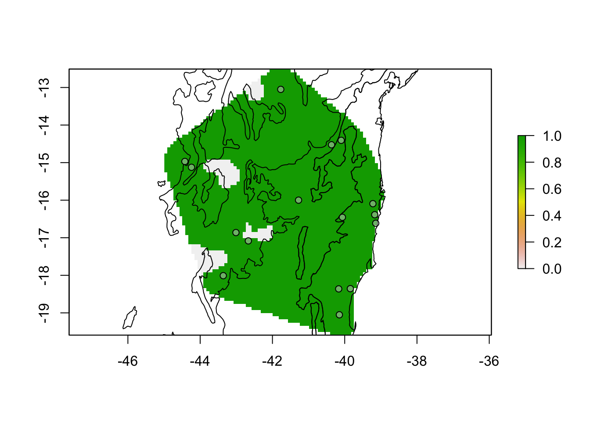
E. perditus
Note: putative “perditus 2” species localities from Mariana’s phylogenetics work have been removed
Reading in data for plotting.
# atlantic forest shapefile
af <- read_sf(here("analysis", "data", "atlantic_forest", "atlantic_forest.geojson"))Spatial thin
Read and filter localities.
locs_per <- read_csv(here("analysis", "data", "enyalius_locs.csv")) %>%
# the variable names are messy
janitor::clean_names() %>%
filter(species == "perditus",
!is.na(latitude), !is.na(longitude),
# remove duplicates
!duplicated(latitude)) %>%
# there are some lat/longs with spaces. Need to fix this
mutate(longitude = str_remove(longitude, "\\s"),
latitude = str_remove(latitude, "\\s")) %>%
# convert to numeric
mutate(longitude = as.numeric(longitude),
latitude = as.numeric(latitude)) %>%
# convert to sf for spatial operations
st_as_sf(coords = c("longitude", "latitude"),
crs = 4326,
remove = FALSE)
# plot localities
plot(st_geometry(af))
plot(st_geometry(locs_per), add = TRUE)Spatial thin. I’m using a 20 km buffer. Leaves us with 21 localities.
set.seed(117553)
#run spthin algorithm. This returns 100 possible combinations of removed localities
output <-
spThin::thin(
locs_per,
'latitude',
'longitude',
'species',
thin.par = 20,
reps = 100,
locs.thinned.list.return = TRUE,
write.files = FALSE,
verbose = FALSE
)
# I want to maximize the # of localities returned
maxThin <- which(sapply(output, nrow) == max(sapply(output, nrow)))
# if there are multiple iterations with the max # of localities, pick one
maxThin <-
output[[ifelse(length(maxThin) > 1, maxThin[1], maxThin)]]
# subset locs to match only thinned locs
locs_per <- locs_per[as.numeric(rownames(maxThin)), ]
# get the unused locs as a testing data set
# this probably isn't useful since they will overlap heavily with the training data, but seems like another piece of info to look at
test_per <- locs_per[-as.numeric(rownames(maxThin)), ]
plot(st_geometry(af))
plot(st_geometry(locs_per), add=TRUE)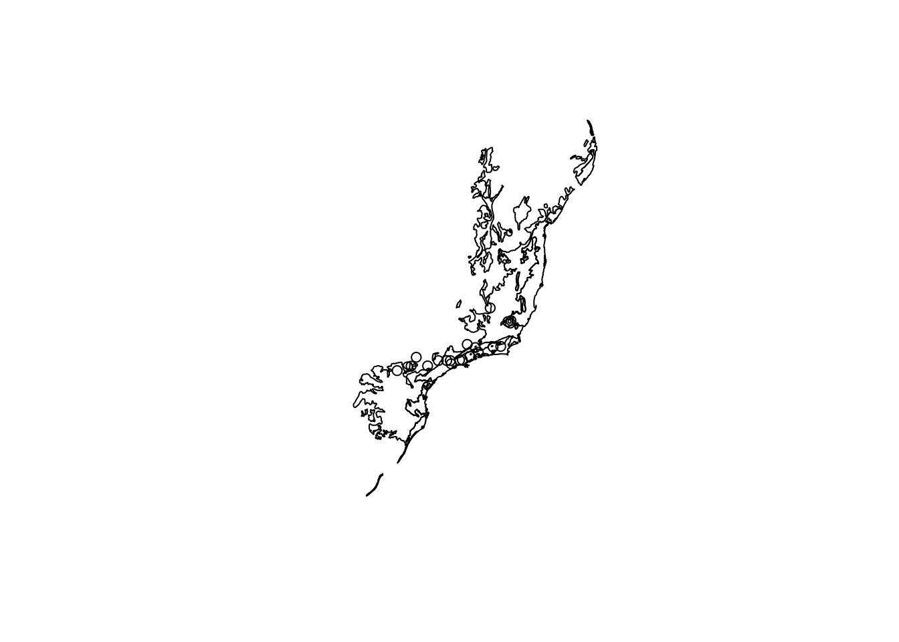
Write thinned localities to file
# Write to file
st_write(locs_per, here("analysis", "output", "thinned_localities", "perditus_thinned.gpkg"),
delete_dsn = TRUE)Crop environment
First, I need to read in the environmental data.
bioclims <- terra::rast(here("analysis", "output", "cropped_predictors", "bioclims.tif"))
forest_cover <- terra::rast(here("analysis", "output", "cropped_predictors", "forest_cover.tif"))Cropping and combining variables for analysis.
mcp_per <- st_convex_hull(st_union(locs_per)) %>%
st_buffer(dist = units::set_units(0.5, degree)) %>%
terra::vect()
bioclims_per <- bioclims %>%
# the bioclims are in a slightly different CRS
terra::project(forest_cover) %>%
terra::crop(mcp_per) %>%
terra::mask(mcp_per)
forest_cover_per <- forest_cover %>%
terra::crop(mcp_per) %>%
terra::mask(mcp_per)
plot(bioclims_per[[1]])
plot(st_geometry(locs_per), add = TRUE)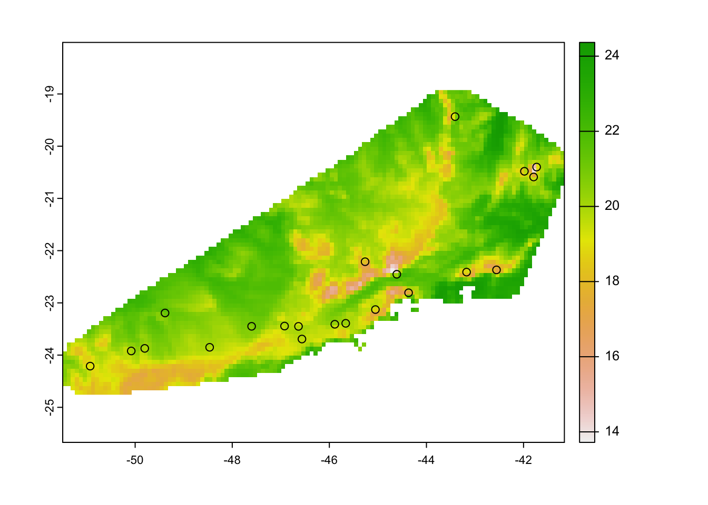
plot(forest_cover_per)
plot(st_geometry(locs_per), add = TRUE)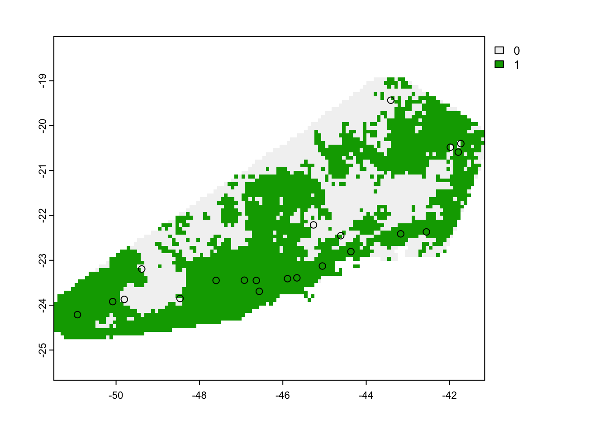
predictors_per <- c(bioclims_per)Predictor correlation
Sample 10000 background points. Actually got 4225 points.
set.seed(86999784)
# for variable correlations
bg_envt_per <- terra::spatSample(predictors_per, 10000,
warn=TRUE,
na.rm = TRUE,
as.df = TRUE,
xy = TRUE)
# for use in ENMevaluate
bg_coords_per <- bg_envt_per[,c("x", "y")]Next, I’ll extract the values for the background points and perform variance inflation factor stepwise selection with a VIF threshold of 10.
# extract values
bg_corr_per <- bg_envt_per %>% select(-x, -y)
usdm::vifstep(bg_corr_per, th=10)13 variables from the 19 input variables have collinearity problem:
bio6 bio9 bio11 bio10 bio16 bio1 bio2 bio17 bio15 bio12 bio14 bio5 bio4
After excluding the collinear variables, the linear correlation coefficients ranges between:
min correlation ( bio8 ~ bio7 ): 0.008159235
max correlation ( bio18 ~ bio13 ): 0.7985442
---------- VIFs of the remained variables --------
Variables VIF
1 bio13 5.975932
2 bio18 5.104742
3 bio19 2.053604
4 bio3 1.825184
5 bio7 1.688345
6 bio8 1.454240The final variable list: BIO3, BIO7, BIO8, BIO13, BIO18, BIO19
predictors_per <- predictors_per[[c("bio3", "bio7", "bio8", "bio13", "bio18", "bio19")]]Maxent model
I’m using a jackknife model evaluation approach since I only have 17 observations.
set.seed(42344377)
coords_per <- st_coordinates(locs_per)
colnames(coords_per) <- c("x", "y")
folds_per <- ENMeval::get.jackknife(occ = coords_per,
bg = bg_coords_per)Run the model. Predictions are clamped to prevent extrapolation.
set.seed(9769997)
# the vector of regularization multipliers to test
rms <- seq(0.5, 5, 0.5)
# convert the terra object to a raster stack for use in EMNeval
predictors_per_stack <- raster::stack(predictors_per)
# iterate model building over all chosen parameter settings
sdm_per <-
ENMeval::ENMevaluate(
occs = coords_per,
envs = predictors_per_stack,
bg.coords = bg_coords_per,
RMvalues = rms,
fc = c('L', 'LQ'),
# clamping to prevent model extrapolation
doClamp = TRUE,
taxon.name = "perditus",
partitions = "user",
# going to do a separate run with the final model on testing data
#occs.testing = test_per,
user.grp = folds_per,
clamp = TRUE,
algorithm = "maxent.jar",
parallel = TRUE,
numCores = 6
)# write the model to file
write_rds(sdm_per, here("analysis", "output", "sdm_models", "sdm_perditus.rds"))Model evaluation
Let’s take a look at the model results.
eval_table_per <- sdm_per@results
eval_mods_per <- sdm_per@models
names(eval_mods_per) <-
str_replace_all(names(eval_mods_per), "\\.", "\\_")Select the final model. First I’m looking at plots of model evaluation stats to get an idea of the spread of stats.
daic_per <- ggplot(data = eval_table_per, aes(x = rm, y = delta.AICc, color = fc)) +
geom_point() +
scale_color_viridis_d() +
theme_bw()
or_per <- ggplot(data = eval_table_per, aes(x = rm, y = or.10p.avg, color = fc)) +
geom_point() +
scale_color_viridis_d() +
theme_bw()
dauc_per <- ggplot(data = eval_table_per, aes(x = rm, y = auc.diff.avg, color = fc)) +
geom_point() +
scale_color_viridis_d() +
theme_bw()
(daic_per + or_per) / (dauc_per)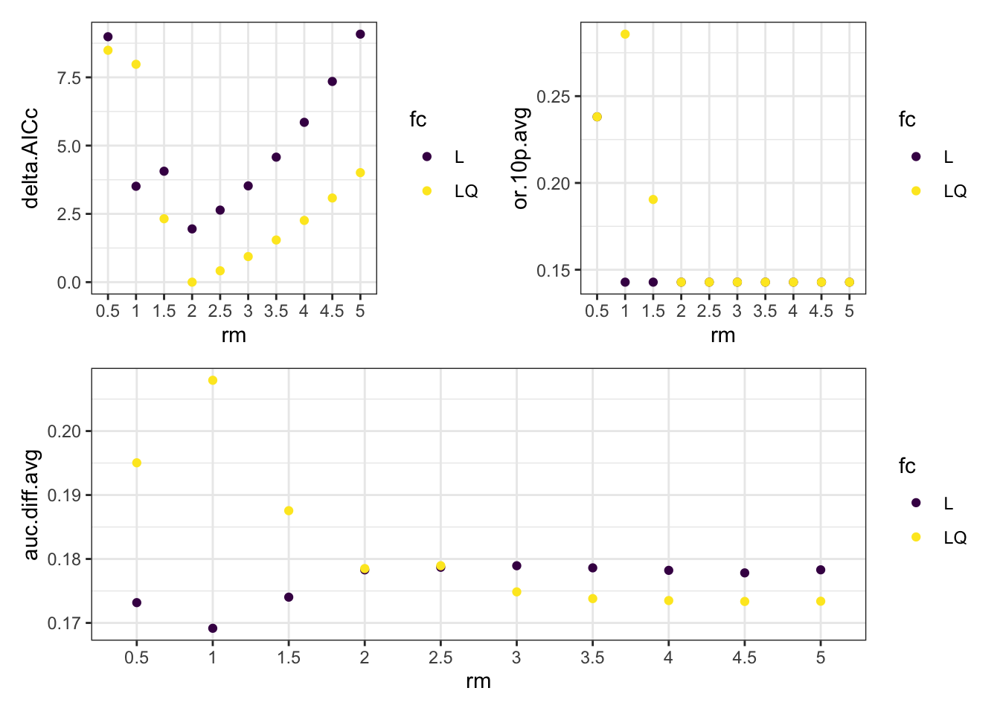
Now I’m going to take a look at tables of delta AICc, omission rate, and AUC to see how close the models are. The model with the lowest AICc has a relatively high omission error rate (0.24), so I chose the model with a lower OR (0.12) that is only 1.15 AICc away (fc LQ and rm 3.5). It is also a simpler model with a 3.5 regularization multiplier, which is nice.
eval_table_per %>%
select(delta.AICc, AICc, or.10p.avg, or.mtp.avg, auc.diff.avg, auc.val.avg, rm, fc) %>%
arrange(delta.AICc) %>%
head(10) %>%
knitr::kable()| delta.AICc | AICc | or.10p.avg | or.mtp.avg | auc.diff.avg | auc.val.avg | rm | fc |
|---|---|---|---|---|---|---|---|
| 0.0000000 | 339.5757 | 0.1428571 | 0.047619 | 0.1784993 | 0.7334968 | 2 | LQ |
| 0.4158697 | 339.9916 | 0.1428571 | 0.047619 | 0.1789456 | 0.7397182 | 2.5 | LQ |
| 0.9368890 | 340.5126 | 0.1428571 | 0.047619 | 0.1748540 | 0.7432122 | 3 | LQ |
| 1.5436325 | 341.1193 | 0.1428571 | 0.047619 | 0.1738036 | 0.7433587 | 3.5 | LQ |
| 1.9497229 | 341.5254 | 0.1428571 | 0.047619 | 0.1782947 | 0.7395717 | 2 | L |
| 2.2600904 | 341.8358 | 0.1428571 | 0.047619 | 0.1734979 | 0.7428064 | 4 | LQ |
| 2.3218255 | 341.8975 | 0.1904762 | 0.047619 | 0.1875503 | 0.7163539 | 1.5 | LQ |
| 2.6385383 | 342.2143 | 0.1428571 | 0.047619 | 0.1786994 | 0.7393914 | 2.5 | L |
| 3.0814332 | 342.6571 | 0.1428571 | 0.047619 | 0.1733570 | 0.7413863 | 4.5 | LQ |
| 3.5107314 | 343.0864 | 0.1428571 | 0.047619 | 0.1691615 | 0.7275796 | 1 | L |
Select model.
mod_per <- eval_mods_per$rm_2_fc_LQ
opt_seq_tune_per <- eval_table_per$tune.args[eval_table_per$tune.args == "rm.2_fc.LQ"]Variable importance. BIO8 and BIO3.
plot(mod_per)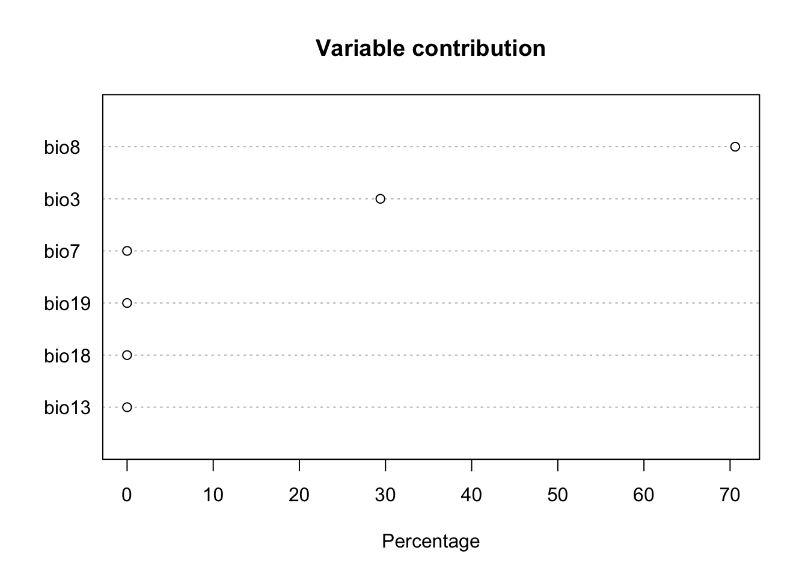
png("variable_contribution_perditus.png")
plot(mod_per)
dev.off()
file.copy(here("variable_contribution_perditus.png"), here("analysis", "output", "sdm_response_curves_variable_importance", "variable_contribution_perditus.png"))
file.remove(here("variable_contribution_perditus.png"))Plot the response curves. Almost binary response with isothermality, higher = lower suitability. Lower mean daily temps of the wettest quarter correspond with higher suitability.
dismo::response(mod_per)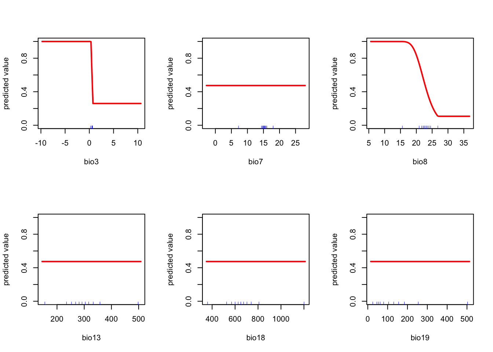
png("response_curves_perditus.png")
dismo::response(mod_per)
dev.off()
file.copy(here("response_curves_perditus.png"), here("analysis", "output", "sdm_response_curves_variable_importance", "response_curves_perditus.png"))
file.remove(here("response_curves_perditus.png"))Project
I’m projecting the model to the study area extent.
pred_per <- ENMeval::eval.predictions(sdm_per)[[opt_seq_tune_per]]
plot(pred_per)
plot(st_geometry(af), add = TRUE)
plot(st_geometry(locs_per), pch = 21, bg = alpha("lightgray", 0.5), add = TRUE)
pred_per_thresh <- pred_per$rm.2_fc.LQ
# observed suitabilities
obs_suit_per <- terra::extract(pred_per$rm.2_fc.LQ, locs_per)
# minimum training presence
min_suit_per <- min(obs_suit_per)
pred_per_thresh[pred_per_thresh >= min_suit_per] <- 1
pred_per_thresh[pred_per_thresh < min_suit_per] <- 0
plot(pred_per_thresh)
plot(st_geometry(af), add = TRUE)
plot(st_geometry(locs_per), pch = 21, bg = alpha("lightgray", 0.5), add = TRUE)
E. iheringii
Reading in data for plotting.
# atlantic forest shapefile
af <- read_sf(here("analysis", "data", "atlantic_forest", "atlantic_forest.geojson"))Spatial thin
Read and filter localities.
locs_ihe <- read_csv(here("analysis", "data", "enyalius_locs.csv")) %>%
# the variable names are messy
janitor::clean_names() %>%
filter(species == "iheringii",
!is.na(latitude), !is.na(longitude),
# remove duplicates
!duplicated(latitude)
) %>%
# there are some lat/longs with spaces. Need to fix this
mutate(longitude = str_remove(longitude, "\\s"),
latitude = str_remove(latitude, "\\s")) %>%
# convert to numeric
mutate(longitude = as.numeric(longitude),
latitude = as.numeric(latitude)) %>%
# some localities fall into the ocean when the rasters are aggregated. They need to be bumped by 0.05 degrees to overlap their respective environmental layer. Given the coarseness of the analysis, this does not bias results.
mutate(
longitude = case_when(
longitude == -47.01956 ~ longitude - 0.05,
longitude == -47.93278 ~ longitude - 0.05,
longitude == -47.93139 ~ longitude - 0.05,
longitude == -48.03889 ~ longitude - 0.05,
.default = longitude
),
latitude = case_when(latitude == -23.595 ~ latitude + 0.05,
.default = latitude)
) %>%
# convert to sf for spatial operations
st_as_sf(coords = c("longitude", "latitude"),
crs = 4326,
remove = FALSE)
# plot localities
plot(st_geometry(af))
plot(st_geometry(locs_ihe), add = TRUE)Spatial thin. I’m using a 20 km buffer
set.seed(2333)
#run spthin algorithm. This returns 100 possible combinations of removed localities
output <-
spThin::thin(
locs_ihe,
'latitude',
'longitude',
'species',
thin.par = 20,
reps = 100,
locs.thinned.list.return = TRUE,
write.files = FALSE,
verbose = FALSE
)
# I want to maximize the # of localities returned
maxThin <- which(sapply(output, nrow) == max(sapply(output, nrow)))
# if there are multiple iterations with the max # of localities, pick one
maxThin <-
output[[ifelse(length(maxThin) > 1, maxThin[1], maxThin)]]
# subset locs to match only thinned locs
locs_ihe <- locs_ihe[as.numeric(rownames(maxThin)), ]
# get the unused locs as a testing data set
# this probably isn't useful since they will overlap heavily with the training data, but seems like another piece of info to look at
test_ihe <- locs_ihe[-as.numeric(rownames(maxThin)), ]
plot(st_geometry(af))
plot(st_geometry(locs_ihe), add=TRUE)Write thinned localities to file
# Write to file
st_write(locs_ihe, here("analysis", "output", "thinned_localities", "iheringii_thinned.gpkg"),
delete_dsn = TRUE)Crop environment
First, I need to read in the environmental data.
bioclims <- terra::rast(here("analysis", "output", "cropped_predictors", "bioclims.tif"))
forest_cover <- terra::rast(here("analysis", "output", "cropped_predictors", "forest_cover.tif"))Cropping and combining variables for analysis. Cropping to 0.5 degree buffer to accomodate reasonable dispersal
mcp_ihe <- st_convex_hull(st_union(locs_ihe)) %>%
st_buffer(dist = units::set_units(0.5, degree)) %>%
terra::vect()
bioclims_ihe <- bioclims %>%
# the bioclims are in a slightly different CRS
terra::project(forest_cover) %>%
terra::crop(mcp_ihe) %>%
terra::mask(mcp_ihe)
forest_cover_ihe <- forest_cover %>%
terra::crop(bioclims_ihe) %>%
terra::mask(bioclims_ihe)
plot(bioclims_ihe[[1]])
plot(st_geometry(locs_ihe), add = TRUE)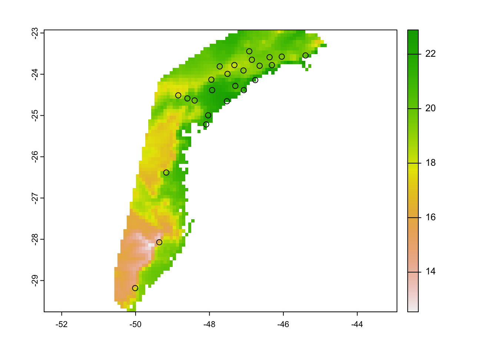
plot(forest_cover_ihe[[1]])
plot(st_geometry(locs_ihe), add = TRUE)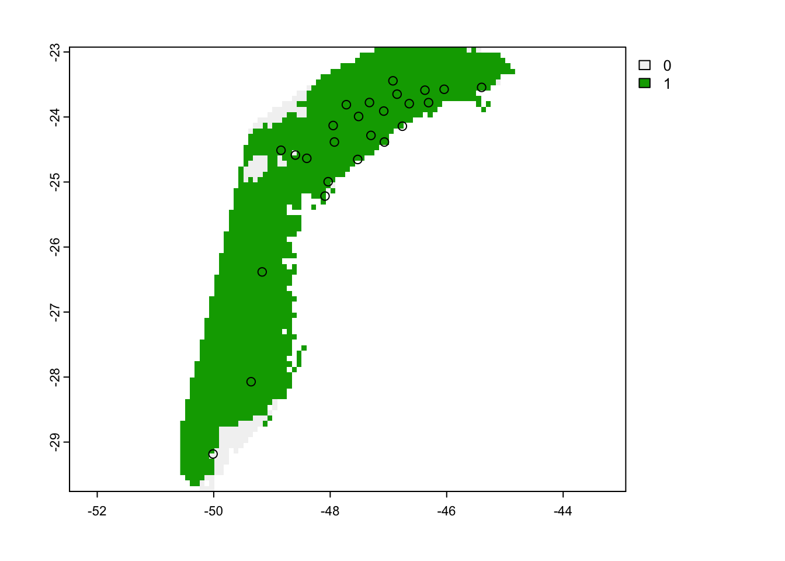
predictors_ihe <- c(bioclims_ihe)Predictor correlation
Sample 10000 background points. Only 6515 were able to be sampled.
set.seed(7488)
# for variable correlations
bg_envt_ihe <- terra::spatSample(predictors_ihe, 10000,
warn=TRUE,
na.rm = TRUE,
as.df = TRUE,
xy = TRUE)
# for use in ENMevaluate
bg_coords_ihe <- bg_envt_ihe[,c("x", "y")]Next, I’ll extract the values for the background points and perform variance inflation factor stepwise selection with a VIF threshold of 10.
# extract values
bg_corr_ihe <- bg_envt_ihe %>% select(-x, -y)
usdm::vifstep(bg_corr_ihe, th=10)13 variables from the 19 input variables have collinearity problem:
bio6 bio11 bio10 bio16 bio1 bio12 bio2 bio17 bio4 bio13 bio19 bio5 bio15
After excluding the collinear variables, the linear correlation coefficients ranges between:
min correlation ( bio18 ~ bio14 ): 0.01500325
max correlation ( bio9 ~ bio8 ): 0.7692181
---------- VIFs of the remained variables --------
Variables VIF
1 bio14 5.733003
2 bio18 2.436903
3 bio3 4.584239
4 bio7 3.383648
5 bio8 3.822119
6 bio9 2.703539The final variable list: BIO3, BIO7, BIO8, BIO9, BIO14, BIO18
predictors_ihe <- predictors_ihe[[c("bio3", "bio7", "bio8", "bio9", "bio14", "bio18")]]Maxent model
I’m using a jackknife model evaluation approach since I only have 26 observations.
set.seed(3398737)
coords_ihe <- st_coordinates(locs_ihe)
colnames(coords_ihe) <- c("x", "y")
folds_ihe <- ENMeval::get.jackknife(occ = coords_ihe,
bg = bg_coords_ihe)Run the model. Predictions are clamped to prevent extrapolation.
set.seed(19999923)
# the vector of regularization multipliers to test
rms <- seq(0.5, 5, 0.5)
# convert the terra object to a raster stack for use in EMNeval
predictors_ihe_stack <- raster::stack(predictors_ihe)
# iterate model building over all chosen parameter settings
sdm_ihe <-
ENMeval::ENMevaluate(
occs = coords_ihe,
envs = predictors_ihe_stack,
bg.coords = bg_coords_ihe,
RMvalues = rms,
fc = c('L', 'LQ'),
# clamping to prevent model extrapolation
doClamp = TRUE,
taxon.name = "iheringii",
partitions = "user",
# going to do a separate run with the final model on testing data
#occs.testing = test_ihe,
user.grp = folds_ihe,
clamp = TRUE,
algorithm = "maxent.jar",
parallel = TRUE,
numCores = 6
)# write the model to file
write_rds(sdm_ihe, here("analysis", "output", "sdm_models", "sdm_iheringii.rds"))Model evaluation
Let’s take a look at the model results.
eval_table_ihe <- sdm_ihe@results
eval_mods_ihe <- sdm_ihe@models
names(eval_mods_ihe) <-
str_replace_all(names(eval_mods_ihe), "\\.", "\\_")Select the final model. First I’m looking at plots of model evaluation stats to get an idea of the spread of stats.
daic_ihe <- ggplot(data = eval_table_ihe, aes(x = rm, y = delta.AICc, color = fc)) +
geom_point() +
scale_color_viridis_d() +
theme_bw()
or_ihe <- ggplot(data = eval_table_ihe, aes(x = rm, y = or.10p.avg, color = fc)) +
geom_point() +
scale_color_viridis_d() +
theme_bw()
dauc_ihe <- ggplot(data = eval_table_ihe, aes(x = rm, y = auc.diff.avg, color = fc)) +
geom_point() +
scale_color_viridis_d() +
theme_bw()
(daic_ihe + or_ihe) / (dauc_ihe)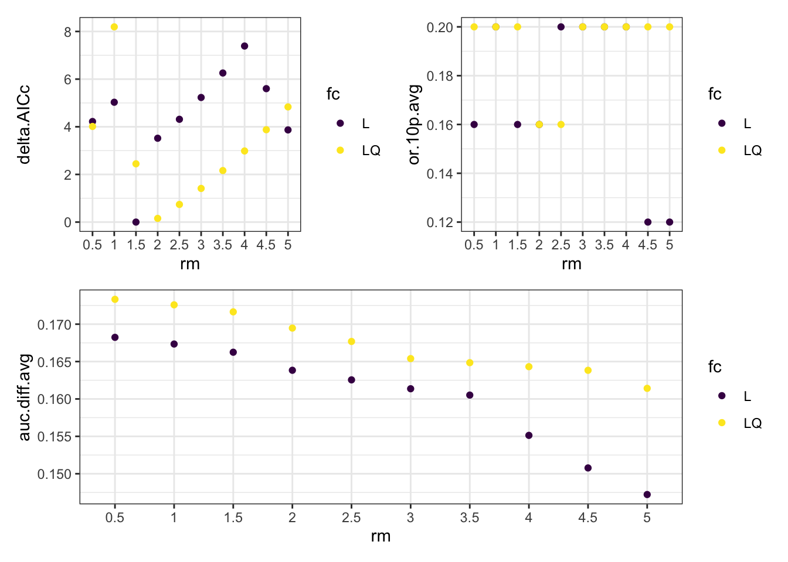
Now I’m going to take a look at tables of delta AICc, omission rate, and AUC to see how close the models are. All of the top models have the same omission rate, similar AUC, and are either LQ or L. I chose the simplest model within 2 AICc of the top model, which was the rm 2.5 and linear feature class model. The top was a rm 2.5 linear quadratic, but even marginally simpler is better within reasonable limits. After skimming through them, they are all very similar models.
eval_table_ihe %>%
select(delta.AICc, AICc, or.10p.avg, or.mtp.avg, auc.diff.avg, auc.val.avg, rm, fc) %>%
arrange(delta.AICc) %>%
head(10) %>%
knitr::kable()| delta.AICc | AICc | or.10p.avg | or.mtp.avg | auc.diff.avg | auc.val.avg | rm | fc |
|---|---|---|---|---|---|---|---|
| 0.0000000 | 350.9994 | 0.16 | 0.12 | 0.1662477 | 0.7679014 | 1.5 | L |
| 0.1545411 | 351.1540 | 0.16 | 0.08 | 0.1694758 | 0.7643897 | 2 | LQ |
| 0.7403935 | 351.7398 | 0.16 | 0.08 | 0.1676889 | 0.7625857 | 2.5 | LQ |
| 1.4120727 | 352.4115 | 0.20 | 0.12 | 0.1653969 | 0.7608779 | 3 | LQ |
| 2.1619731 | 353.1614 | 0.20 | 0.08 | 0.1648507 | 0.7590740 | 3.5 | LQ |
| 2.4465226 | 353.4459 | 0.20 | 0.04 | 0.1716466 | 0.7628262 | 1.5 | LQ |
| 2.9846966 | 353.9841 | 0.20 | 0.08 | 0.1643165 | 0.7572459 | 4 | LQ |
| 3.5188323 | 354.5182 | 0.16 | 0.12 | 0.1638344 | 0.7653277 | 2 | L |
| 3.8682930 | 354.8677 | 0.12 | 0.04 | 0.1472209 | 0.7683584 | 5 | L |
| 3.8763248 | 354.8757 | 0.20 | 0.08 | 0.1638314 | 0.7562357 | 4.5 | LQ |
Select model.
mod_ihe <- eval_mods_ihe$rm_2_fc_LQ
opt_seq_tune_ihe <- eval_table_ihe$tune.args[eval_table_ihe$tune.args == "rm.2_fc.LQ"]Variable importance.
plot(mod_ihe)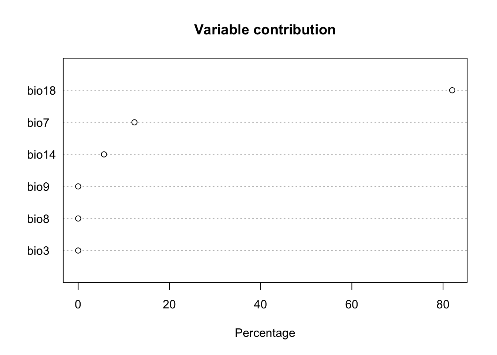
png("variable_contribution_iheringii.png")
plot(mod_ihe)
dev.off()
file.copy(here("variable_contribution_iheringii.png"), here("analysis", "output", "sdm_response_curves_variable_importance", "variable_contribution_iheringii.png"))
file.remove(here("variable_contribution_iheringii.png"))Plot the response curves. In order: bio3, bio7^2, bio8, bio9, bio14^2, bio18.
dismo::response(mod_ihe)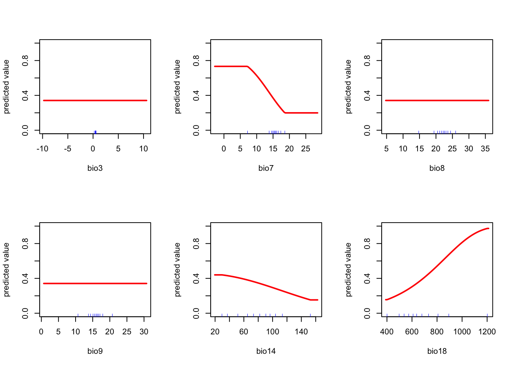
png("response_curves_iheringii.png")
dismo::response(mod_ihe)
dev.off()
file.copy(here("response_curves_iheringii.png"), here("analysis", "output", "sdm_response_curves_variable_importance", "response_curves_iheringii.png"))
file.remove(here("response_curves_iheringii.png"))Project
I’m projecting the model to the study area extent. It’s not predicting strong suitability for the southern localities. I’ll have to look at the genetic structure and locality info more closely to see what’s up with them.
pred_ihe <- ENMeval::eval.predictions(sdm_ihe)[[opt_seq_tune_ihe]]
plot(pred_ihe)
plot(st_geometry(af), add = TRUE)
plot(st_geometry(locs_ihe), pch = 21, bg = alpha("lightgray", 0.5), add = TRUE)
pred_ihe_thresh <- pred_ihe$rm.2_fc.LQ
# observed suitabilities
obs_suit_ihe <- terra::extract(pred_ihe$rm.2_fc.LQ, locs_ihe)
# minimum training presence
min_suit_ihe <- min(obs_suit_ihe)
pred_ihe_thresh[pred_ihe_thresh >= min_suit_ihe] <- 1
pred_ihe_thresh[pred_ihe_thresh < min_suit_ihe] <- 0
plot(pred_ihe_thresh)
plot(st_geometry(af), add = TRUE)
plot(st_geometry(locs_ihe), pch = 21, bg = alpha("lightgray", 0.5), add = TRUE)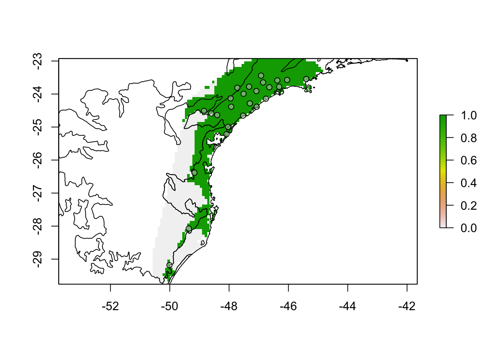